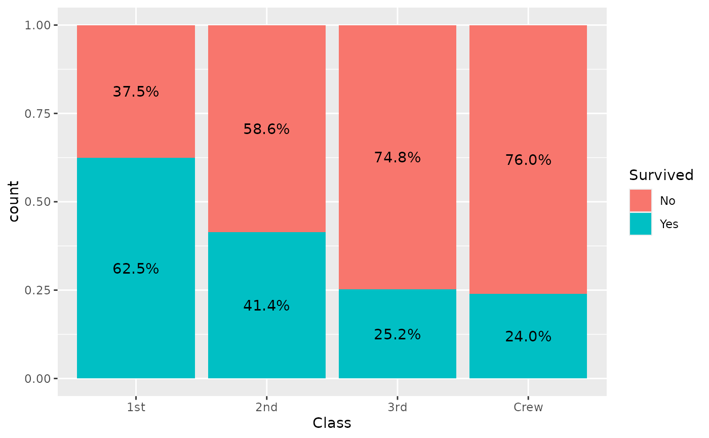
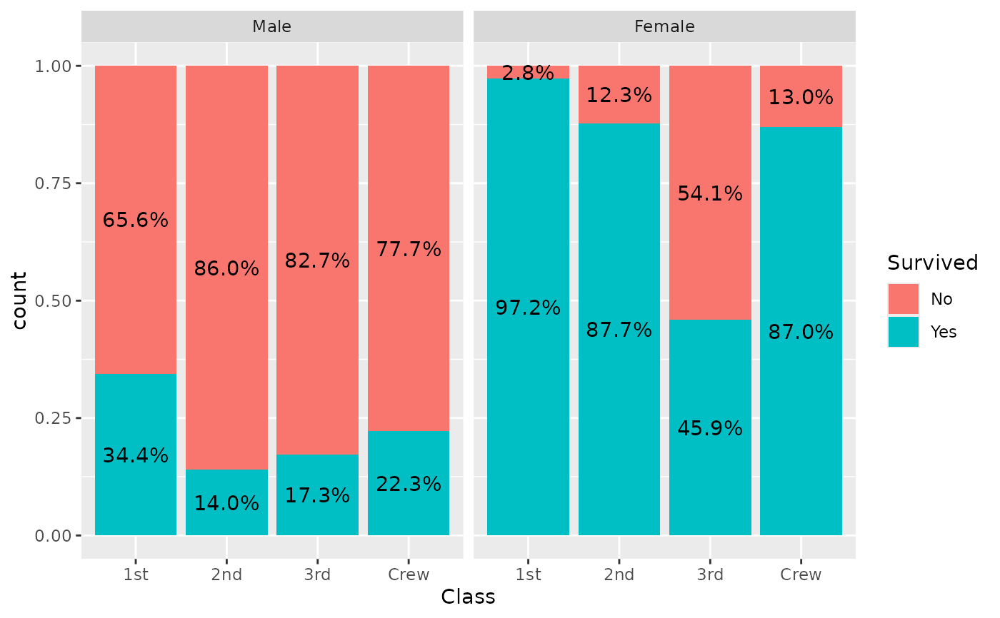

stat_prop() is a variation of ggplot2::stat_count() allowing to
compute custom proportions according to the by aesthetic defining
the denominator (i.e. all proportions for a same value of by will
sum to 1). The by aesthetic should be a factor. If by is not
specified, proportions of the total will be computed.
stat_prop(
mapping = NULL,
data = NULL,
geom = "bar",
position = "fill",
...,
width = NULL,
na.rm = FALSE,
orientation = NA,
show.legend = NA,
inherit.aes = TRUE,
complete = NULL
)Arguments
- mapping
Set of aesthetic mappings created by
aes(). If specified andinherit.aes = TRUE(the default), it is combined with the default mapping at the top level of the plot. You must supplymappingif there is no plot mapping.- data
The data to be displayed in this layer. There are three options:
If
NULL, the default, the data is inherited from the plot data as specified in the call toggplot().A
data.frame, or other object, will override the plot data. All objects will be fortified to produce a data frame. Seefortify()for which variables will be created.A
functionwill be called with a single argument, the plot data. The return value must be adata.frame, and will be used as the layer data. Afunctioncan be created from aformula(e.g.~ head(.x, 10)).- geom
Override the default connection with
ggplot2::geom_bar().- position
Position adjustment, either as a string naming the adjustment (e.g.
"jitter"to useposition_jitter), or the result of a call to a position adjustment function. Use the latter if you need to change the settings of the adjustment.- ...
Other arguments passed on to
layer(). These are often aesthetics, used to set an aesthetic to a fixed value, likecolour = "red"orsize = 3. They may also be parameters to the paired geom/stat.- width
Bar width. By default, set to 90% of the
resolution()of the data.- na.rm
If
FALSE, the default, missing values are removed with a warning. IfTRUE, missing values are silently removed.- orientation
The orientation of the layer. The default (
NA) automatically determines the orientation from the aesthetic mapping. In the rare event that this fails it can be given explicitly by settingorientationto either"x"or"y". See the Orientation section for more detail.- show.legend
logical. Should this layer be included in the legends?
NA, the default, includes if any aesthetics are mapped.FALSEnever includes, andTRUEalways includes. It can also be a named logical vector to finely select the aesthetics to display.- inherit.aes
If
FALSE, overrides the default aesthetics, rather than combining with them. This is most useful for helper functions that define both data and aesthetics and shouldn't inherit behaviour from the default plot specification, e.g.borders().- complete
Name (character) of an aesthetic for those statistics should be completed for unobserved values (see example)
Value
A ggplot2 plot with the added statistic.
Aesthetics
stat_prop() understands the following aesthetics
(required aesthetics are in bold):
x or y
by (this aesthetic should be a factor)
group
weight
Computed variables
- count
number of points in bin
- prop
computed proportion
See also
Examples
library(ggplot2)
d <- as.data.frame(Titanic)
p <- ggplot(d) +
aes(x = Class, fill = Survived, weight = Freq, by = Class) +
geom_bar(position = "fill") +
geom_text(stat = "prop", position = position_fill(.5))
p

p + facet_grid(~Sex)

ggplot(d) +
aes(x = Class, fill = Survived, weight = Freq) +
geom_bar(position = "dodge") +
geom_text(
aes(by = Survived),
stat = "prop",
position = position_dodge(0.9), vjust = "bottom"
)
 # \donttest{
if (requireNamespace("scales")) {
ggplot(d) +
aes(x = Class, fill = Survived, weight = Freq, by = 1) +
geom_bar() +
geom_text(
aes(label = scales::percent(after_stat(prop), accuracy = 1)),
stat = "prop",
position = position_stack(.5)
)
}
# displaying unobserved levels with complete
d <- diamonds %>%
dplyr::filter(!(cut == "Ideal" & clarity == "I1")) %>%
dplyr::filter(!(cut == "Very Good" & clarity == "VS2")) %>%
dplyr::filter(!(cut == "Premium" & clarity == "IF"))
p <- ggplot(d) +
aes(x = clarity, fill = cut, by = clarity) +
geom_bar(position = "fill")
p + geom_text(stat = "prop", position = position_fill(.5))
# \donttest{
if (requireNamespace("scales")) {
ggplot(d) +
aes(x = Class, fill = Survived, weight = Freq, by = 1) +
geom_bar() +
geom_text(
aes(label = scales::percent(after_stat(prop), accuracy = 1)),
stat = "prop",
position = position_stack(.5)
)
}
# displaying unobserved levels with complete
d <- diamonds %>%
dplyr::filter(!(cut == "Ideal" & clarity == "I1")) %>%
dplyr::filter(!(cut == "Very Good" & clarity == "VS2")) %>%
dplyr::filter(!(cut == "Premium" & clarity == "IF"))
p <- ggplot(d) +
aes(x = clarity, fill = cut, by = clarity) +
geom_bar(position = "fill")
p + geom_text(stat = "prop", position = position_fill(.5))
 p + geom_text(stat = "prop", position = position_fill(.5), complete = "fill")
p + geom_text(stat = "prop", position = position_fill(.5), complete = "fill")
 # }
# }